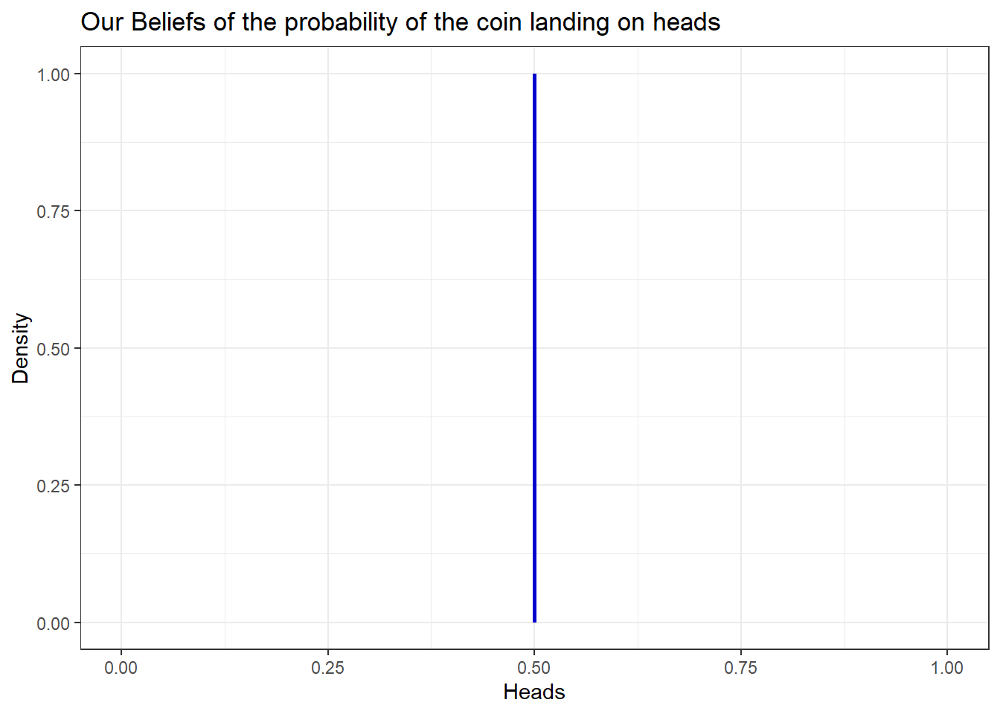
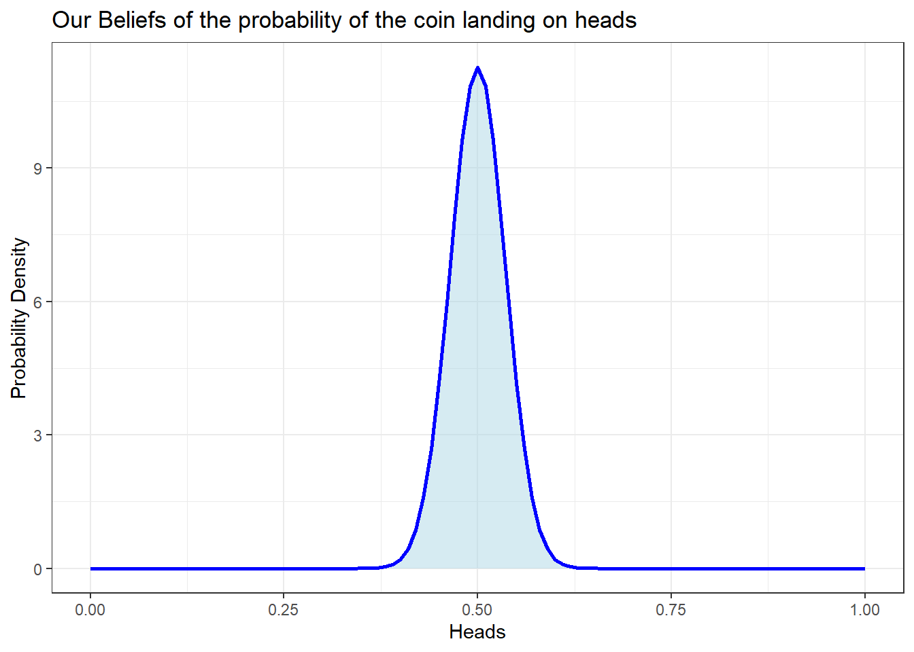
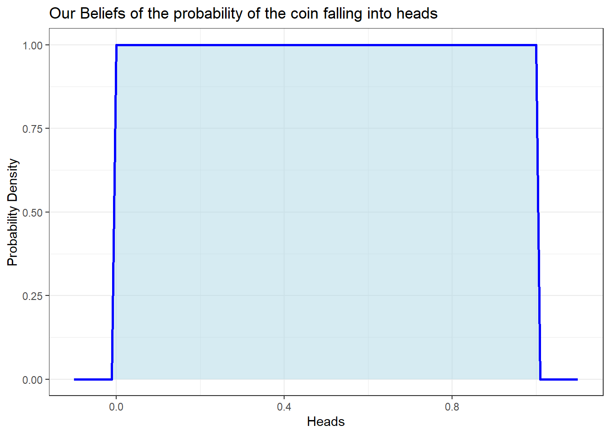
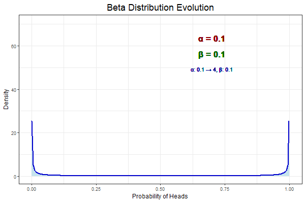
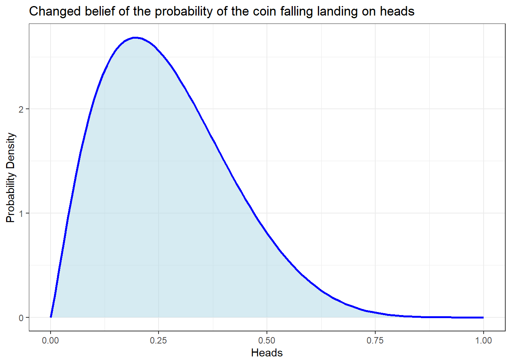
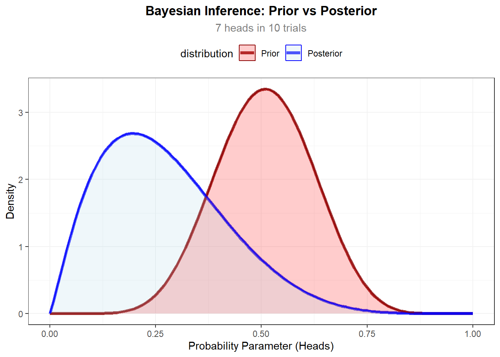

Bayesian Intuition for Beginners with Interactive Web Applications
Introduction
My journey into statistics is an unusual case. I got an introduction of the classical test statistics (\(z, \space t, \space tt, \chi^{2}, etc...\)) for experimental design class. I liked it a lot but I wasn’t satisfied and later on it felt that I needed a solid background of statistics; YouTube’s algorithm noticed it and showed an incredible video (Lennox 2016) that explains this school of thought of statistics called Bayesianism. It convinced me. The result: I learned Bayesian statistics first and then Frequentists stats.
Recently I have been going deep into Frequentist approaches of decision making given that it is what must people know. But, I always get this feeling of insatisfaction, maybe even contempt. Reading a paper by Efron (1986) called “Why Isn’t Everyone a Bayesian?” — great article — inspired me to make my first Bayesian blog about the classical coin flipping scenario seeing from the lens of Bayesianism. It is really intuitive and playing with the web applications will make you have a better understanding. Hope you like it. My objective is to get you into the inverse probability rabbit hole.
This is for beginners and I won’t be using any math. If you want to know what is going on behind the scenario check Murphy (2023). The web applications for playing are in the extra links section at the right side of your the screen.
Coin flipping
You are a pre-teenager in a children party like back in the days. It is late and your boredom is starting to become uncomfortable even for your friends. You get an idea, “Let’s bet playing the coin”, “Yes!!”
1) Setting up your belief
You know it is a dumb game because you know there is 50/50 chance of winning. The is no skill involvement. But okay, you proposed it so you have to play along. You will be betting on heads. Here as a Bayesian we define our beliefs of the probability that it falls heads, which is 50%:
Here we are saying that you are 100% sure that the probability is 50%. This isn’t true. There is some variation produced from factory in the shape of the coin, or any other reason you can think about. So you define a more accurate belief:

Here we are saying that we are still pretty sure that the probability is 50%. Imagine that we are really clueless, and we really don’t know. This is how we would represent our belief:

Why does this expression translates into cluelessness? By assigning equal probability to everything you are saying that anything can happen, it is an expression of complete uncertainty1
How do we modify our beliefs? We use something called probability density functions. The normal distribution is a probability density function. They contain something called hyperparameters that we use, in this case, to modify the state of our beliefs by changing its values. The next animation showz how the beta distribution, which is the probability density function we have used in the previous figures, changes when the hyperparameters are modified.

Next it’s your turn to modified the hyperparameters and get a sense of how the beta distribution works. Go to the link play at the bottom right side of the screen with the name “Beta Distribution Visualizer”. Play with the app, and think how would YOU define your beliefs over a coin.
2) Updating your belief
The game is about to start and suddenly a friendly voice says “I bet 100$ on Tails but with my coin”. You know that tone, it is your tricky cheater of a cousin. You know he has some biased coins in his closet. Your belief over the coin changes rapidly:

You just think he is going to cheat, and you are assigning a smaller probability of the coin been fair. The only way to change our belief is by playing, because maybe you are wrong and it is really a fair coin by landing 50/50 heads and tails. Let’s play 10 times:

Turns out your prior belief, which stated he would cheat, isn’t correct. He used a fair coin. I guess sometimes people change.
Bayesian statistics
This is the essence of Bayesian statistics: a method in which we update our beliefs over something given evidence. The updated evidence is what is called the posterior and you can think of it as a compromise between our prior beliefs and the data.
\[ posterior ≈ data \space * \space prior \]
Please enter to the link at the bottom right side of the screen with the name “Bayesian Coin Toss Simulation” to get a sense how posterior is formed given evidence (data). If you have a very strong belief, it is probable that the prior overwhelms the data, so chose wisely your prior.
Further readings
This is just the begging of the Bayesian paradigm. And I hope you like it. If you really like it and you are a true beginner I recommend Kruschke (2015) (I left the link for the .pdf), the author explains every single topic exquisitely, and it is all about doing data analysis for the frequent practitioner, if you are not really into math, this is the book. If you want something more rigorous, more for statisticians Gelman et al. (2013) is the bible for Bayesians (in the url page you can downloaded for free). If you are interested and don’t know where to start, don’t hesitate in contact me.
References
Efron, Bradley. 1986. “Why Isn’t Everyone a Bayesian?” The American Statistician 40 (1): 1–5. https://doi.org/10.2307/2683105.
Gelman, Andrew, John B. Carlin, Hal S. Stern, David B. Dunson, Aki Vehtari, and Donald B. Rubin. 2013. Bayesian Data Analysis. Third. Chapman & Hall/CRC Texts in Statistical Science. Boca Raton, FL: Chapman; Hall/CRC. https://doi.org/10.1201/b16018.
Kruschke, John K. 2015. Doing Bayesian Data Analysis: A Tutorial with r, JAGS, and Stan. 2nd ed. Boston: Academic Press. https://nyu-cdsc.github.io/learningr/assets/kruschke_bayesian_in_R.pdf.
Lennox, Kristin. 2016. All about That Bayes: Probability, Statistics, and the Quest to Quantify Uncertainty. https://youtu.be/eDMGDhyDxuY.
Murphy, Kevin P. 2023. Probabilistic Machine Learning: Advanced Topics. MIT Press. http://probml.github.io/book2.
Footnotes
There are better ways to express cluelessness in Bayesian statistics. This non-informative uniform prior is saying something at the end by assigning equal probabilities to anything. That’s something! There is others non-informative priors that really try not to say something, like Jeffreys prior. More info about noninformative priors in Murphy (2023)↩︎